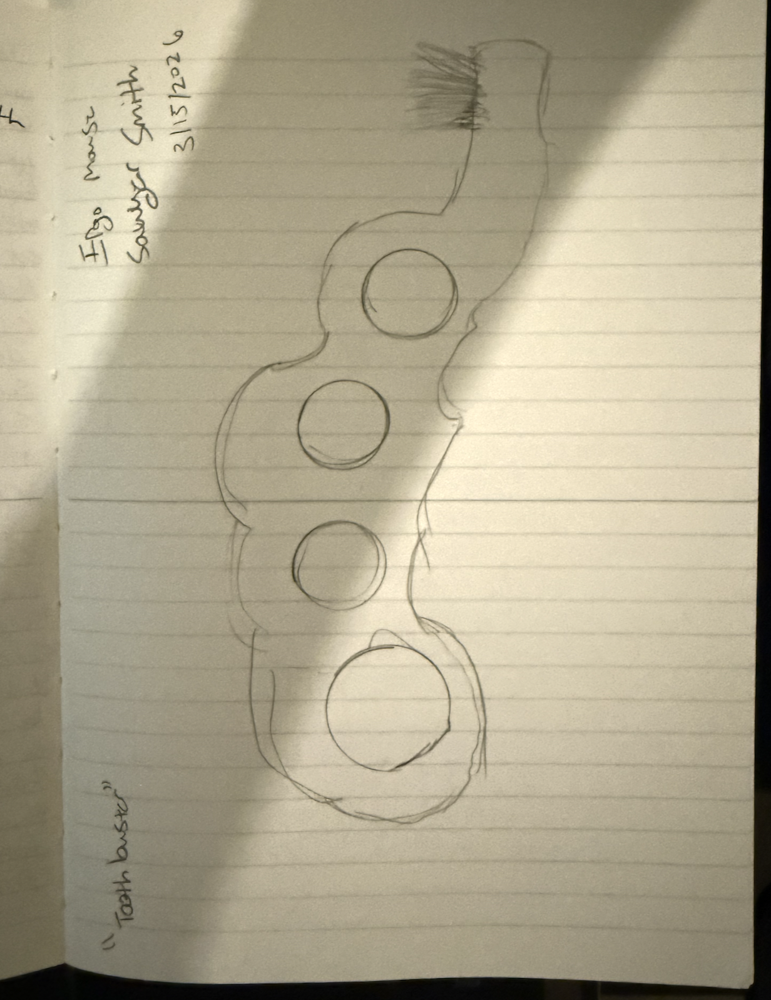

For this sketch assignment, I designed the Tooth Buster, an ergonomic toothbrush concept that rethinks the standard skinny toothbrush handle. The main idea is to create a toothbrush that is easier and more comfortable to hold by combining two grip strategies. First, it uses a brass-knuckles style finger-hole layout that gives the user a more positive and secure hold. Second, the outer shape has a more organic, rounded profile so it still feels comfortable in the hand instead of harsh or mechanical.

The goal of this design is to help people who may have a harder time gripping a traditional toothbrush. A normal toothbrush usually relies on a narrow handle, which can be awkward or uncomfortable for users with weaker grip strength, reduced hand mobility, or anyone who simply wants a more stable hold while brushing. By giving the hand multiple contact points and a larger form to grab onto, the Tooth Buster could make brushing feel more controlled and less tiring.
What could make it better?
This product could be improved further by refining the exact size of the finger holes and the curvature of the body so it fits a wider range of hand sizes. Soft rubber overmolding or textured grip areas could also make it even more comfortable and less slippery when wet. In a more developed version, the toothbrush head could potentially be replaceable so the main ergonomic handle could be reused over time. That would make the product more practical and reduce waste.
Does anyone really care?
I think people could care about this product because toothbrushes are something everyone uses every day, but most of them are not designed with grip comfort as the main priority. This concept also adds an element of fun and personality to an otherwise ordinary object. Even beyond accessibility, the unusual form makes it more visually interesting and memorable than a standard toothbrush.
Is it marketable?
I do think this could be marketable. It could appeal to users looking for more ergonomic bathroom products, people with limited hand strength, or customers who just want a toothbrush with a more unique and playful identity. Marketing would likely work best by emphasizing both comfort and novelty: it is easier to hold than a normal toothbrush, but it also stands out as a fun product with a bold design.
This is a private blog for course notes and reflections. Content is not indexed or publicly listed.